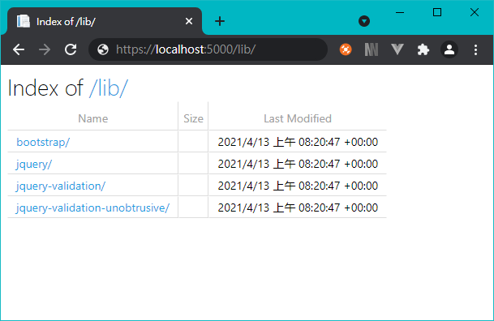

【ASP.NET Core 5】
靜態檔案是 HTML、css、image、js 等資源檔案，過去 .NET Framework 可直接被存取，在 ASP.NET Core 中，已不能直接被瀏覽，對於存取有特定的限制。
Start
首先，先了解 Content root 以及 Web root，硬翻成中文為內容根目錄 & Web 根目錄。
Content root（內容根目錄）
Content root 預設為專案的根目錄，包含
- 裝載應用程式的可執行檔
.exe - 組成應用程式的已編譯元件
.dll - 應用程式所使用的內容檔案
- Razor(
.cshtml、.razor) - 設定檔(
.json、.xml) - 資料檔案(
.db)
- Razor(
- Web 根目錄(
Web root)
Web root（Web 根目錄）
Web root 為公共靜態資源的基本路徑，預設路徑為 {content root}/wwwroot
- 樣式
.css - JavaScript
.js - 影像檔
.png、.jpg
建立一個專案，在方案總管中找到 wwwroot，可看到預設已建立 css、js、lib 資料夾，使用路徑 https://localhost:5000/css/site.css 嘗試讀取 ~/css/site.css 該檔案， 可直接瀏覽檔案內容。
測試自行建立的資料夾是否能存取，在 wwwroot 目錄下建立 images 資料夾以自定義靜態檔案路徑，並放置一張影像檔在該目錄下，嘗試使用 URL https://localhost:5000/images/MyImages.jpg 來讀取該檔案，應能正常瀏覽。
指定 Web root
靜態檔案預設儲存於專案的 Web root 下，預設路徑為 {content root}/wwwroot，我們可以使用 UseWebRoot 方法，來變更預設的存放路徑。
開啟 Program.cs，CreateDefaultBuilder 方法可將 content root 設為目前的目錄。使用 UseWebRoot 方法將 Web root 變更為 public，隨後在 public 放置一張影像檔，實際測試 URL https://localhost:5000/public/MyImages.jpg，結果在未設定前無法讀取 wwwroot 以外的目錄，設定後就能讀取指定目錄。要注意的是，該動作的目標是變更，經變更後，wwwroot 該目錄會停用存取，取而代之的是 public。
若測試結果不相同，請嘗試清理瀏覽器快取。
public class Program
{
public static void Main(string[] args)
{
CreateHostBuilder(args).Build().Run();
}
public static IHostBuilder CreateHostBuilder(string[] args) =>
Host.CreateDefaultBuilder(args)
.ConfigureWebHostDefaults(webBuilder =>
{
webBuilder.UseStartup<Startup>();
// 設置
webBuilder.UseWebRoot("public");
});
}
註冊 UseStaticFiles Middleware
專案在預設情況下，已經在 Startup.cs 註冊靜態檔案中介軟體，在 Configure 方法中可以找到 app.UseStaticFiles()，該段即為用來啟用靜態檔案中介軟體的服務，嘗試將此段註解，實際測試 URL https://localhost:5000/public/MyImages.jpg，得到的結果是無法存取預設的靜態檔案 wwwroot。
public void Configure(IApplicationBuilder app, IWebHostEnvironment env)
{
...
// 啟用靜態檔案
app.UseStaticFiles();
...
}
啟用 Web root 以外的目錄檔案
前面使用 UseWebRoot 來改變 Web root 靜態檔案的預設路徑，如果想要同時存取兩個以上的目錄位址，例如可以同時存取 wwwroot 及其它同階層目錄 files，階層如下
- wwwroot
- css
- images
- js
- files
MyImage.jpg
我們可以藉由設定靜態檔案中介軟體來存取檔案，先啟用存取 wwwroot 目錄之服務，再啟用存取其他目錄之服務。
// 需要引用的命名空間
using System.IO;
using Microsoft.Extensions.FileProviders;
...
public void Configure(IApplicationBuilder app, IWebHostEnvironment env)
{
...
// wwwroot
app.UseStaticFiles();
// Other
app.UseStaticFiles(new StaticFileOptions
{
// 檔案提供位址
FileProvider = new PhysicalFileProvider(
Path.Combine(env.ContentRootPath, "files")),
// 靜態資源對應的 request path
RequestPath = "/staticFiles"
});
...
}
通過上述設定，/staticFiles 區段公開了 files 目錄階層，實際測試 URL https://localhost:5000/staticFiles/MyImage.jpg，可正常瀏覽該目錄下的靜態檔案，達到 wwwroot 和 files 皆能瀏覽之效果。
若想停用
wwwroot存取服務，將app.UseStaticFiles()註解調即可
預設檔案
預設頁面是提供訪客在進入網站時的第一個頁面，通常預設頁面會是 index.html，可以透過 UseDefaultFiles 方法來設定靜態檔案目錄的預設頁面，使用該方法時，會要求依序搜尋 wwwroot 資料夾內的檔案，順序如下
default.htmdefault.htmlindex.htmindex.html
值得注意，必須在 UseStaticFiles 之前使用 UseDefaultFiles，若後啟用 UseDefaultFiles 服務的話，當 URL 為 / 時，UseStaticFiles 找不到檔案，就會直接回傳找不到，就不會有機會進入 UseStaticFiles。
兩者的職責
UseDefaultFiles是嘗試請求預設檔案UseStaticFiles是回傳請求檔案
// 先啟用
app.UseDefaultFiles();
// 後啟用
app.UseStaticFiles();
除了上述預設頁面，還可以自訂預設頁面，使用 DefaultFilesOptions 物件來自定義預設頁面，代碼如下
var options = new DefaultFilesOptions();
// 清空原本預設頁面
options.DefaultFileNames.Clear();
// 添加自定義預設頁面
options.DefaultFileNames.Add("myDefault.html");
// 啟用自定義預設頁面
app.UseDefaultFiles(options);
app.UseStaticFiles();
使用自訂預設頁面時，如同預設頁面，會依序搜尋 wwwroot 資料夾內的檔案。實際測試在 wwwroot 新增 myDefault.html，將專案 run 起來，發現 https://localhost:5000/ 瀏覽頁面已經被更換為 myDefault.html，不再是預設的 ~/Home/Index。
如果是想添加自訂的預設頁面，但不想將原先定義的四個預設頁面清除，在上述代碼中將 options.DefaultFileNames.Clear() 拿掉即可。
瀏覽目錄
瀏覽目錄允許在指定的路徑中列出目錄，基於安全性的考量，預設會停用瀏覽目錄，但可以透過 AddDirectoryBrowser 及 UseDirectoryBrowser 來註冊及啟用該服務。
public void ConfigureServices(IServiceCollection services)
{
// 註冊瀏覽目錄服務
services.AddDirectoryBrowser();
}
public void Configure(IApplicationBuilder app, IWebHostEnvironment env)
{
...
// 啟用瀏覽目錄服務
app.UseDirectoryBrowser();
...
}
在空建構子的情況下，預設啟用的目錄為 wwwroot，例如跳轉到 https://localhost:5000/lib/，會列出 /wwwroot/lib 目錄下的所有檔案。

若欲啟用瀏覽指定路徑的目錄，要先使用靜態檔案中介軟體來啟用存取檔案服務，接著再啟用瀏覽目錄服務。
public void ConfigureServices(IServiceCollection services)
{
// 註冊瀏覽目錄服務
services.AddDirectoryBrowser();
}
public void Configure(IApplicationBuilder app, IWebHostEnvironment env)
{
// 啟用指定目錄存取
app.UseStaticFiles(new StaticFileOptions
{
FileProvider = new PhysicalFileProvider(
Path.Combine(env.ContentRootPath, "files")),
RequestPath = "/staticFiles"
});
// 啟用瀏覽指定目錄服務
app.UseDirectoryBrowser(new DirectoryBrowserOptions
{
FileProvider = new PhysicalFileProvider(
Path.Combine(env.WebRootPath, "files")),
RequestPath = "/staticFiles"
});
}
UseFileServer
先前介紹停用檔案存取的限制，以及開啟瀏覽目錄，UseFileServer 方法結合了 UseStaticFiles、UseDefaultFiles，也可以選擇性的結合 UseDirectoryBrowser。
直接使用 UseFileServer 來啟用檔案服務，等同於使用 UseDefaultFiles 和 UseStaticFiles。
public void Configure(IApplicationBuilder app, IWebHostEnvironment env)
{
// 啟用檔案服務
app.UseFileServer();
// 等於同時使用下列兩種方法
// app.UseDefaultFiles();
// app.UseStaticFiles();
}
帶入參數 enableDirectoryBrowsin: true 來啟用瀏覽目錄、啟用存取靜態檔案以及預設檔案，預設頁面會更換為列出 wwwroot 目錄
app.UseFileServer(enableDirectoryBrowsing: true);
上面目標是 wwwroot 目錄，欲指定其他目錄，代碼如下
public void Configure(IApplicationBuilder app, IWebHostEnvironment env)
{
app.UseFileServer(new FileServerOptions
{
FileProvider = new PhysicalFileProvider(
Path.Combine(env.ContentRootPath, "files")),
RequestPath = "/staticFiles",
EnableDirectoryBrowsing = true
});
}
官方寫說若 EnabledDirectoryBrowsing 的 value 為 true 時，需要調用 AddDirectoryBrowser()，在這裡筆者沒有註冊該服務依然可以啟用目錄，若無法瀏覽目錄的朋友，可以試著在 ConfigureServices 註冊該服務，看是否有效果。
public void ConfigureServices(IServiceCollection services)
{
// 註冊瀏覽目錄服務
services.AddDirectoryBrowser();
}
Note
過去網站在存取靜態檔案並沒有什麼限制，只要知道目錄結構，就能存取檔案，如今 .NET Core 對此做出變革，雖然需要花點時間了解，網站安全性也相對的提升，了解如何操作靜態檔案後，就可好好建構出乾淨清晰的目錄架構了！